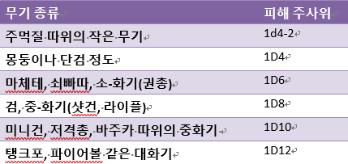
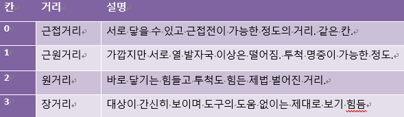

전투 규칙
아이디어 참고: Risusverse사실 전투에 해당되는 행위는 대결로 가능하지만 조금 더 액션을 부각시키고 싶을 때 전투 규칙을 사용합니다. 대결에서 해당 대결에 어울리는 적합한 클리셰를 정하듯이 전투에서도 전투 클리세를 모두 정합니다. 전투에서는 부가적인 요소로 생명을 수치화 시킨 HP와 타격점(TH)를 정해야만 하는데, HP는 기본HP(5~10)+모든 건강 관련 클리셰+기타사항으로 정하고 TH는 10+가장 높은 전투 클리셰+기타사항로 정합니다. (HP와 TH를 정할때 나쁜 클리셰가 있다면 적용하세요) HP와 TH는 그때마다 정하기엔 시간 소모가 크니까 되도록이면 캐릭터 만들기 때 작성해두는 것이 바람직합니다.
특기 규칙 사용시 HP에는 모든 건강 관련 특기의 수 곱하기 특기 수치만큼을 추가. TH는 회피 관련 특기 하나만 적용한다.
아서(시트 참조)를 예시로 들자면 GM과 아서의 PL이 생각하기에 건강에 관련된 클리셰는 '최고의 기사(4)'와 '켈트족의 영웅(4)'이고 특기는 칼싸움과 근력, 들짐승 사냥입니다. 주연이기에 기본 HP10에 클리셰 8점, 특기는 +2인데 3개가 있으니 6점, 이렇게 총합해서 HP 24가 됩니다.TH는 기본10에 상의중 전투 관련 클리셰 하나는 '최고의 기사(4)'로, 회피 관련 클리셰 하나는 들짐승 사냥으로 쳐서 총 6의 추가 점수를 얻어 16이 됩니다.
이제 본격적으로 전투 규칙에 대해서 설명하자면, 먼저 턴과 라운드를 이해합시다. 턴은 각 개체가 행동하는 때이고 라운드는 전투에 참여하는 모든 캐릭터가 턴을 마친 정도의 시간을 뜻하며 턴과 라운드의 시간 흐름은 상황에 따라 마스터가 정합니다. 전투는 1개 이상의 라운드로 진행되며 전투 규칙은 4단계로 나뉘어집니다.
- 위치선정: 전투가 시작되면 가장 먼저 마스터가 구역을 깔고, 각 전투자의 위치를 선정해줍니다. 물론 마스터는 자신의 마음대로가 아닌 최대한 전투가 벌어지기 전 상황을 고려해서 선정하는 것이 좋습니다. 때로는 주사위를 이용해 랜덤으로 결정할 수도 있습니다. 예를 들어 구역이 10개면 1d10를 굴려 나온 숫자의 구역에 위치하기.
- 순서 정하기: 각자 원하는 전투 클리셰로 판정해 높은 사람부터 낮은 사람까지 순으로 순서를 정합니다.
- 액션: 자기 턴에 각 캐릭터는 3개의 액션을 받습니다. 액션을 소모해서 행동, 공격, 이동 이렇게 3가지가 가능합니다. 말하거나 무언가 꺼내는 등의 간단한 행위는 자유로 할 수 있되 긴박한 상황에 몇초만에 긴 장문을 외운다던가 권총 부품을 꺼내어 조립한다던가 등 묵직한 것들은 아무리 쉬워도 액션을 소모하는 것으로 칩니다.
- 피해: 전투 규칙에서는 클리셰 점수의 소모는 없고 대신에 HP가 감소됩니다. 공격에 성공하면 가진 무기에 맞게 피해 판정을 하고 그 값만큼 상대의 HP를 감소시킵니다. d6식 표를 따를 경우 음수가 떠도 최소 피해는 1로 칩니다.

액션 설명
캐릭터의 경우 주연이기 때문에 기본적으로 3개의 액션을 받고 이 액션을 소모해 여러가지 일을 할 수 있습니다.거리 개념과 이동
전투에서 가장 중요한 것은 일단 거리 개념입니다. 전투가 시작되어 위치선정을 했다면 각자 구역에 위치해 있을 것입니다. 이렇게 전투판은 여러 개의 구역으로 나뉘어지는데 전투 장소의 규모에 대비해서 마스터가 설정합니다. 한 구역 안에 들어갈 수 있는 인원 제한은 기본적으로는 없습니다. 위치선정을 하고 나면 각자 얼만큼의 거리가 차이가 나는지 보일 것입니다. 같은 칸에 있거나 떨어져 있거나 이런 개념은 아래 테이블에서 설명을 합니다.
이러한 거리에 따라서 할 수 있는 일들이 달라지며 더 어렵거나 더 쉬워집니다. 이동은 액션 1당 1칸씩 가능합니다.
공격
거리에 따라서 공격의 개념이 바뀝니다. 같은 칸에 있는 근접거리 대상은 칼이나 도끼 같은 근접무기로 공격이 가능합니다. 물론 원거리 무기도 가능하긴 하지만 판정에 불리합니다. 근원거리부터는 근접무기로 공격이 불가능하며 원거리 공격을 해야만 합니다. 근원거리는 근접무기를 던져서 닿을 수는 있습니다. 장거리의 경우 일반적인 경우에는 공격이 불가능 하거나 가능하더라도 판정에 불리합니다. 그래서 저격총이나 헬기 사격 요청 등의 멀리 사격이 가능한 원거리 무기가 필요로 합니다. 이렇게 공격을 할 때 판정은 해당 공격에 어울리는 클리셰를 사용해 상대의 TH를 대상으로 해서 그 이상이 나오면 공격 성공으로 피해를 줄 수 있습니다. 추가로 같은 칸 내 적이 다른 칸으로 넘어가려고 할 시에 기회공격이 가능합니다.
d20식에 명시된 크리티컬/펌블 규칙을 사용하는 경우 공격에 크리티컬이 뜨면 피해 주사위를 하나 더 굴려 추가하거나, 혹은 다른 이득을 취하거나 둘 중 하나를 선택합니다. 이득을 택할 경우 어떤 이득을 원하는지 말하고 GM과 상의하세요. 예를 들자면 상대의 두 눈을 찔렀다던가, 혹은 상대를 밀쳐 넘어뜨렸다던가 등....
전투중 행동
평소에 하던 것처럼 모든 일반적인 행동을 할 수 있습니다. 간단히 말을 꺼낸다던지 물품을 품에서 꺼낸다던지 하는 것은 잡행동으로 쳐서 액션의 소모 없이도 얼마든지 할 수 있게 해주지만 탐색, 심문, 연설, 등... 물론 잡행동도 너무 많이 하거나 복잡할 경우 일반 행동으로 간주할 수도 있습니다. 물품의 사용도 일반적인 행동으로 간주합니다만 전투에 큰 영향을 주지 않는 것들은 잡행동으로 간주할 수도 있습니다. 멋으로 담배에 불을 붙인다는 등...
전투가 불리하다 싶으면 도주도 시도할 수 있습니다만 같은 칸에서는 불가능 합니다. 도주는 간단히 상대와 한방 대결을 합니다. 필요시 일반 대결로 전투와 이어지는 멋진 추격전을 연출할 수도 있습니다. 상대와 3칸 이상이 차이날 경우 도주자는 판정에 유리하고 추격자는 판정에 불리합니다.
상대가 눈치를 못 채고 공격을 하는 기습 공격은 항상 유리합니다. 한 턴에 여러번 공격할 경우 첫번째 공격만 기습으로 칩니다.
반응
기회공격이나 도주에 대한 대응처럼 때로는 누군가에 의해 반응하여 판정을 할 때가 있는데 이를 반응이라고 합니다. 이러한 반응은 액션과 무관하게 얼마든지 가능합니다.